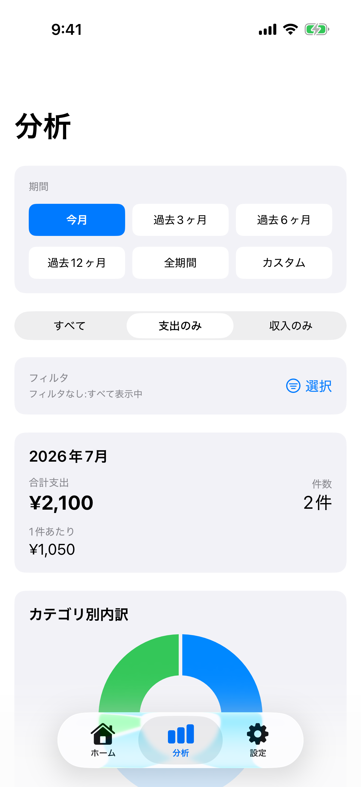

分析機能の使い方
分析機能の使い方¶
画面構成¶
分析画面は、上から「期間選択」「取引種別フィルタ」「サマリーカード」「カテゴリ別グラフ」の順に並びます。

期間選択¶
期間選択は2段のボタングリッドで表示され、すべての選択肢が一目で確認できます。
操作方法: - ボタンをタップするだけで期間を切り替え - 選択中のボタンは青色で強調表示 - タップすると即座にデータが再読み込みされます
カスタム期間選択¶
期間選択で「カスタム」を選ぶと、任意の期間を指定して分析できます。
手順: 1. 期間選択で「カスタム」ボタンをタップ 2. カスタム期間選択エリアが表示されます 3. 「開始日」ボタンをタップ - グラフィカルなカレンダーが表示 - 日付をタップすると自動的に閉じる 4. 「終了日」ボタンをタップ - カレンダーが表示 - 日付をタップすると自動的に閉じる 5. 「適用」ボタン（青色）をタップ 6. 指定した期間のデータが表示される
UI特徴: - 開始日・終了日が縦並びで見やすく表示 - 選択した日付は曜日付きで表示（例: 2026年1月10日(金)） - カレンダーアイコンでタップ可能であることが明示
使用例:
• 特定の月の分析: 2025年12月1日〜2025年12月31日
• 旅行期間の支出: 2025年8月10日〜2025年8月20日
• 年度の分析: 2025年4月1日〜2026年3月31日
取引種別フィルタ¶
期間選択の下に取引種別フィルタがあり、以下の3つから選択できます：
| フィルタ | 説明 |
|---|---|
| すべて | 支出と収入の両方を表示 |
| 支出のみ | 支出のみを表示（デフォルト） |
| 収入のみ | 収入のみを表示 |
使用例:
• 支出だけを分析したい → 「支出のみ」を選択
• 収支のバランスを確認したい → 「すべて」を選択
• 収入源を確認したい → 「収入のみ」を選択
カテゴリ・タグフィルタ¶
特定のカテゴリやタグ、金額帯、支払方法で絞って分析できます。タブで切り替えて選択します。
フィルタの使い方¶
1. フィルタシートを開く
分析画面のフィルタセクション → 「選択」ボタンをタップ
2. タブで切り替え
シート上部に5つのタブが表示されます：
• ⭐ お気に入り
• 📁 カテゴリ
• 🏷️ タグ
• 💰 金額帯
• 💳 支払方法
タブをタップして切り替えます。
選択中のタブはアクセントカラーで表示され、下部にラインが表示されます。
タブ順は設定の「フィルタの並び順」でカスタマイズできます。
3. 各タブでの設定
⭐ お気に入りタブ
• 保存済みのフィルタを選択して即適用
• 「お気に入りを管理」から編集・並べ替え・削除
📁 カテゴリタブ
• トグルをタップしてオン/オフ
• 複数のカテゴリを選択可能
• 選択数が表示される（例: カテゴリ: 3個選択中）
🏷️ タグタブ
• トグルをタップしてオン/オフ
• 複数のタグを選択可能
• 選択数が表示される（例: タグ: 2個選択中）
💰 金額帯タブ
• 最小金額と最大金額を入力
• どちらか一方だけの指定も可能
• 例: 最小1000円、最大5000円 → 1000円〜5000円の支出のみ
💳 支払方法タブ
• トグルをタップしてオン/オフ
• 複数の支払方法を選択可能
• 選択数が表示される（例: 支払方法: 2個選択中）
4. 適用する
• 右上の「適用」ボタンをタップ
• フィルタが適用され、該当するデータのみ表示
5. フィルタをクリア
• シート内の「すべてクリア」ボタン（画面下部）
• または、分析画面の「クリア」ボタン
• すべてのタブの設定が一度にクリアされます
お気に入りへの保存
• フィルタチップ表示の右端にある⭐ボタンをタップ
• 名前を入力して保存
• 期間は保存対象外（カテゴリ・タグ・金額帯・支払方法のみ）
フィルタの動作¶
ホームとの共有: - ホームと分析のフィルタ条件は同期されます（カテゴリ・タグ・金額帯・支払方法） - 期間はそれぞれの画面で独立しています
カテゴリフィルタ（OR条件）: - 選択したカテゴリのいずれかに属する支出を表示 - 例: 「食費」と「交通」を選択 → 食費または交通の支出が表示される
タグフィルタ（OR条件）: - 選択したタグのいずれかが付いている支出を表示 - 例: 「仕事」と「旅行」を選択 → 仕事または旅行タグが付いた支出が表示される
金額帯フィルタ: - 指定した金額範囲内の支出を表示 - 最小のみ指定: その金額以上の支出を表示 - 最大のみ指定: その金額以下の支出を表示 - 両方指定: その範囲内の支出を表示 - 例: 最小1000円、最大5000円 → 1000円以上5000円以下の支出のみ
支払方法フィルタ（OR条件）: - 選択した支払方法のいずれかで支払われた支出を表示 - 例: 「クレジットカード」と「現金」を選択 → クレジットカードまたは現金での支出が表示される
複合フィルタ（AND条件）: - 複数のフィルタタイプを組み合わせた場合、すべての条件を満たす支出のみ表示 - 例: カテゴリ「食費」+ タグ「仕事」+ 金額帯「1000〜5000円」 → 食費かつ仕事タグかつ1000〜5000円の支出のみ
フィルタ状態の確認¶
フィルタセクションに現在の状態が表示されます：
フィルタ
カテゴリ: 2個 タグ: 1個 金額帯 支払方法: 1個 [クリア] [選択]
- 各フィルタタイプの右側に選択数が表示されます
- 金額帯が設定されている場合は「金額帯」と表示されます
- 何も選択していないフィルタは表示されません
フィルタ未適用時：
フィルタ
フィルタなし:すべて表示中 [選択]
使用例¶
例1: 仕事関連の食費を分析
1. 📁 カテゴリタブ: 「食費」を選択
2. 🏷️ タグタブ: 「仕事」を選択
3. 適用
→ 仕事の食費（会議の弁当、接待など）のみ表示
例2: 旅行の支出を分析
1. 📁 カテゴリタブ: 「交通」「食費」「趣味」を選択
2. 🏷️ タグタブ: 「旅行」を選択
3. 適用
→ 旅行中の各種支出を総合的に分析
例3: 定期的な支出を確認
1. 📁 カテゴリタブ: 選択しない（すべて）
2. 🏷️ タグタブ: 「定期」を選択
3. 適用
→ 定期的な支出（サブスク、固定費など）のみ表示
例4: 高額支出をクレジットカードで分析
1. 💰 金額帯タブ: 最小「10000」を入力
2. 💳 支払方法タブ: 「クレジットカード」を選択
3. 適用
→ 1万円以上のクレジットカード支払いのみ表示
例5: 小額の現金支出を確認
1. 💰 金額帯タブ: 最大「1000」を入力
2. 💳 支払方法タブ: 「現金」を選択
3. 適用
→ 1000円以下の現金支払いのみ表示
月次サマリー¶
表示内容: - 合計支出: 期間内の支出総額 - 件数: 登録された支出の数 - 平均: 1件あたりの平均金額
例:
2026年1月
─────────────────
合計支出 ¥125,480
件数 42件
─────────────────
平均 ¥2,988
グラフの見方¶
円グラフ (カテゴリ別内訳)¶
- 上位5カテゴリを表示
- 色分けで視覚的に把握
- タップで詳細表示
棒グラフ (月次推移)¶
- 月ごとの支出推移
- 増減が一目瞭然
- 過去との比較が簡単
カテゴリリスト¶
表示内容: - カテゴリ名 - 合計金額 - 件数 - パーセンテージ
例:
食費 ¥45,600 (18件) 36.4%
交通 ¥28,900 (12件) 23.0%
趣味 ¥18,700 (5件) 14.9%
日用品 ¥15,680 (4件) 12.5%
その他 ¥16,600 (3件) 13.2%